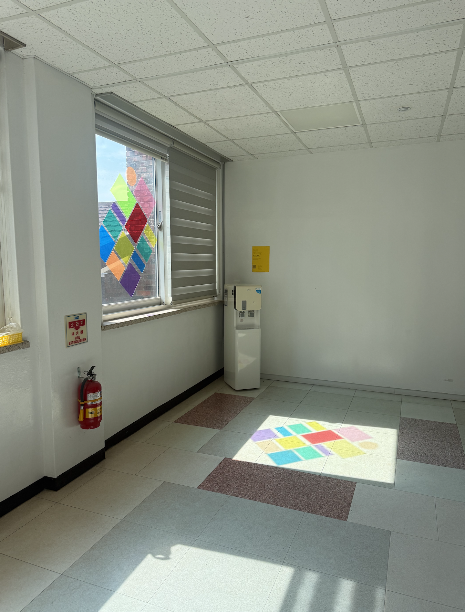
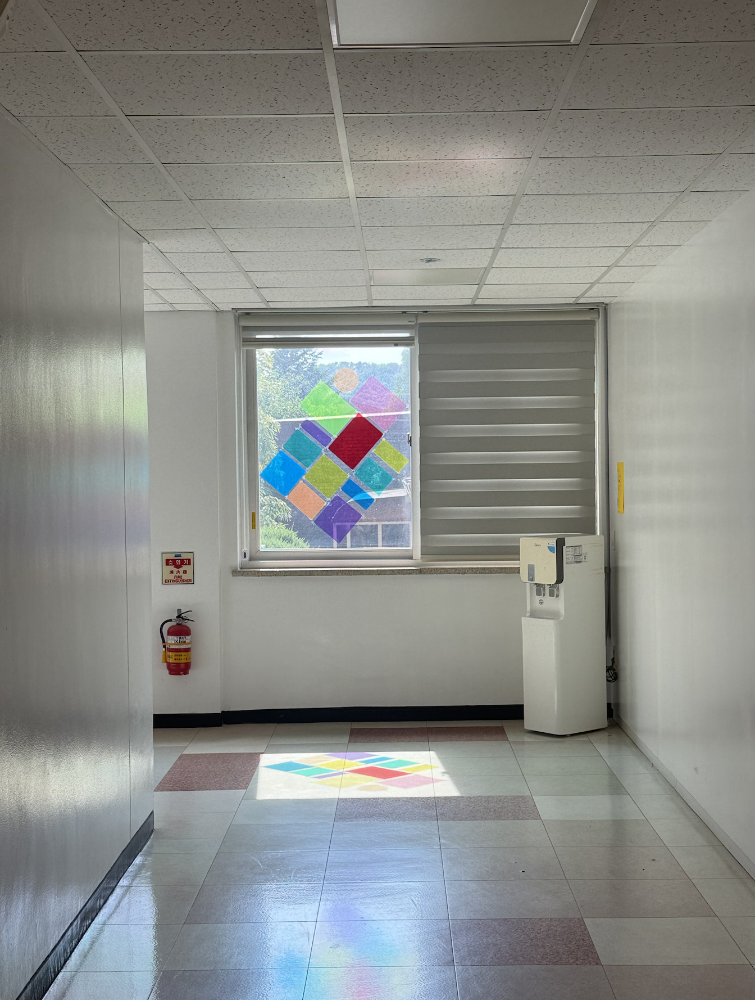

Activating unobserved physical architectural transitions between the Industrial Design corridor and neighboring departments using geometric light projections.
Chosen location: End of the corridor that connects the Industrial Design part of the building with the Culture Technology part of the building.
Protocol: A lot of ID students either believe that the building ends with that corridor or are unaware of the other part of the building, so they never actually go there.
Minimal intervention implemented: Colored panels applied on the window creating a "stained glass" decoration, projecting colorful eye-catching sunrays onto the wall. This is intended to grab the attention of anyone coming in/out of the elevator, making them want to see the design closer, hence discovering the other side of the building and discovering the corridor itself too.
Here is a digital visualization of my concept, given limited resources: i attempted to create a simple yet eye-catching design. You can try too!

